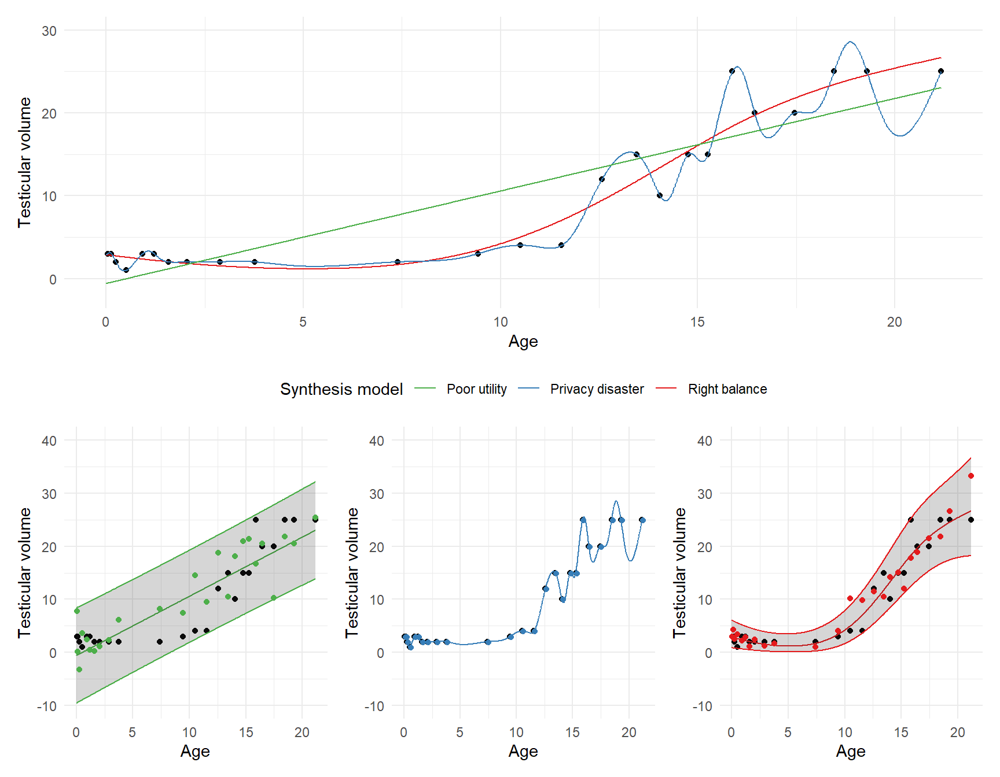

Synthetic Data: The General Idea
Synthetic data: What it is and what it is about?
The idea of synthetic data has first been proposed independently in 1993 by Donald B. Rubin and Roderick J.A. Little, who are known as members of the founding fathers of modern missing data theory (Rubin 1993; Little 1993). Both proposed, albeit in slightly different ways, to not release the original data, but replace values from the original data with values drawn from some model. That is, synthetic data is nothing more than generated data, and is occasionally called simulated data, digital twins or, more colloquially, fake data. This model can be specified independent of the data at hand, but typically it is estimated on a data set. Moreover, the model can range from very simple (e.g., a set of values with attached probabilities) to extremely complex (e.g., a neural network with billions of parameters). Whatever model is used, it is essential that new samples can be generated from it. These newly drawn samples can then be released to the public, as a surrogate dataset that mimics the original data statistically.
In what follows, we assume that there is an observed data set, \(X\), consisting of \(n\) observations measured on \(p\) variables. Furthermore, we assume that these observations adhere to some structure that we can encode in the joint distribution of the variables, \(f(X)\). If we would know this distribution, we could sample new observations from it directly, but we typically do not know this. However, we can estimate this joint distribution from a data set at hand, leading to \(\hat{f}(X)\), and sample new observations from this.
Modelling synthetic data
How to estimate this joint distribution is essentially a question of how to specify the synthetic data model. If our model approximates the true data generating process reasonably well, we can expect fairly high quality synthetic data. To be a bit more precise, this means that both univariate and multivariate patterns of the observed data are preserved in the synthetic data, such as the mean and variance for each variable and the covariances between variables. Moreover, if we model \(f(X)\) accurately and draw new samples from this model, the introduced noise adds uncertainty that contributes to privacy protection. In what follows, we describe the two strategies that have emerged to estimate \(\hat{f}(x)\) and draw samples from it.
(A) Joint modelling
One approach to modelling synthetic data, is by estimating the multivariate distribution of the data directly, and use this single joint model to draw values for all variables simultaneously. We can, for example, model the distribution of the data using a normal approximation. That is, we estimate the means and covariances of the variables in the data, assume normality, and generate synthetic samples from this normal distribution. For many data sets, however, this normal approximation provides a poor fit.
In the past decade, deep learning has become popular for the generation of synthetic data. An advantage of these methods, in particular generative adversarial networks (GANs) and variational auto-encoders (VAEs), is that they do not assume a particular parametric distribution (like the normal approximation). Rather, these methods attempt to learn the distribution of the data, by transforming relatively simple input data in a way that resembles the observed data. While these methods can achieve state-of-the-art performance, extensive tuning is often required to achieve this performance. Moreover, tuning these models such that they produce realistic synthetic data is non-trivial and often performed in an ad hoc fashion, substantially lowering user-friendliness.
(B) Fully conditional specification
A second strategy is to break the joint distribution of the data into a series of conditional distributions, one for each variable (or a block of variables). That is, we can factor the joint distribution of the data into a series of conditionals \[ f(X) = f_1(X_1) f_2(X_2|X_1) \dots f_p(X_p|X_1, \dots X_{p-1}), \] which greatly simplifies the modelling task. That is, rather than specifying the joint distribution, we can model the distribution of each variable separately, somewhat akin to specifying a good prediction model, but with the addition of reasonable assumptions for the noise. In practice, we might proceed as follows.
- Starting from the first variable, we specify a distribution that provides a reasonable approximation to the distribution of the data at hand.
- For the second variable, we specify a prediction model that predicts this variable on the basis of the first, and combine this model with a distribution for the residual variance. If we would use, for example, a linear regression model with normally distributed errors, we fit a regression model with the first variable as predictor and the second variable as outcome. This model is used to predict the second variable from the first in the synthetic data, after which the variance is added by drawing random errors from a normal distribution with mean zero and variance equal to the residual variance of the fitted model.
- For the third variable, we can use a prediction model based on the first two variables, and so on, until all variables are synthesized.
Note that, although in theory the order of synthesis should not matter much, in practice it may make a difference in some cases. We will come back to this issue and provide some concrete advice in the next section.
Fully conditional specification has two distinct advantages over joint modelling:
- It allows great flexibility, because a different model can be used for each variable. That is, this linear model can be combined with or replaced by non-linear (e.g., non-parametric) models that capture non-linear relationships (or non-normal error terms).
- Traditional model evaluation techniques, such as regression diagnostics and posterior predictive checks can be used directly (see the relevant vignette from the
performancepackage for a practical introduction), and potential improvements can be readily incorporated into the synthesis model.1 For example, if a model with a linear relationship between two variables yields a poor fit, a non-linear relationship can be easily incorporated in the synthesis model.
In what follows, we focus on synthesis methods that employ this conditional modelling strategy (also called “fully conditional specification” or “sequential regression”).
There is, of course, much more to say about specifying synthesis models that we cannot cover all in these materials. However, if you wish to learn more about specifying joint models for creating synthetic data, you might find the following resources helpful.
- Murray (2018) (section 6.1): Focuses on specifying joint models for multiple imputation of missing data, but the idea transfers directly to generation of synthetic data (that is, we assume that the missing data occurs in \(n_{syn}\) new samples that are fully missing, or we overimpute the observed data).
- Chollet et al. (2022) (chapter 12): On deep learning for the generation of synthetic data.
-
Volker (2025): Easy and primarily illustrative introduction on generating (simple) synthetic data based on GANs in
R.
If you are interested in any additional resources on fully conditional specification, the following papers might be informative.
- van Buuren et al. (2006): explains the procedure in the context of missing data. Again, adapting the framework to synthetic data is straightforward.
- Drechsler (2011) (section 3.1.2) discusses the concept of fully conditional specification (and compares it to joint modelling in the subsequent section).
(Optional) Exercise: A simple synthetic data model
The following exercise is purely illustrational. In practice, we don’t write our synthesis code from scratch, but we use dedicated R packages to generate synthetic data. However, this section describes how such packages work under the hood, and a basic understanding of this will be helpful for specifying and improving the synthesis models. This exercise is not essential for proceeding the tutorial, but try to understand the general workflow. In the next section, we will use the synthpop package to achieve similar results.
To get a flavour of the two modelling approaches, you will show that it is indeed possible to model a joint distribution as a series of conditionals. For this exercise (and all exercises in subsequent sections), we will use the boys data from the R-package mice,2 and for the time being, we focus on the first three variables age, hgt and wgt. You can obtain the data as follows:
boys data
The boys data contains measurements on 9 variables on 748 Dutch boys. The variables in the data are described below, as well as the first six observations.
-
age: Decimal age (0-21 years) -
hgt: Height (cm) -
wgt: Weight (kg) -
bmi: Body mass index -
hc: Head circumference (cm) -
gen: Genital Tanner stage (G1-G5) -
phb: Pubic hair (Tanner P1-P6) -
tv: Testicular volume (ml) -
reg: Region (north, east, west, south, city)
head(data) |>
knitr::kable(digits = 2) |>
kableExtra::kable_styling(bootstrap_options = c("striped", "hover"))| age | hgt | wgt | bmi | hc | gen | phb | tv | reg |
|---|---|---|---|---|---|---|---|---|
| 0.04 | 50.1 | 3.65 | 14.54 | 33.7 | G2 | P3 | 2 | south |
| 0.04 | 53.5 | 3.37 | 11.77 | 35.0 | G2 | P3 | 2 | south |
| 0.06 | 50.0 | 3.14 | 12.56 | 35.2 | G2 | P3 | 2 | south |
| 0.06 | 54.5 | 4.27 | 14.37 | 36.7 | G2 | P1 | 1 | south |
| 0.06 | 57.5 | 5.03 | 15.21 | 37.3 | G1 | P2 | 2 | south |
| 0.07 | 55.5 | 4.66 | 15.11 | 37.0 | G2 | P2 | 1 | south |
We start by applying the joint modelling strategy on the boys data. For simplicity, we draw synthetic samples by approximating the multivariate distribution of age, hgt and wgt using a three-variate normal distribution, using the means of these variables and their variance-covariance matrix obtained from the observed data. To generate these synthetic samples, we use the R-package mvtnorm (Genz and Bretz 2009). Note that this normal model provides a relatively poor fit to the data (if it were correct, people would keep growing eternally). In practice, we would thus choose a different model, and most synthetic data generation software (including the synthpop package that we will use subsequently) allows for this.
Joint modelling in practice
1. Load the R-package mvtnorm using the function library().
2. Store the means and variance covariance matrix of the just created subset of the boys data.
3. Create your first synthetic data set by calling the function rmvnorm() from the mvtnorm package to sample new observations from a multivariate normal distribution. Set the sample size equal to \(n = 748\), and use the stored mean-vector and variance-covariance matrix.
Note: You may set a seed here for reproducibility (below, seed = 123 is used, but this is no better than any other seed).
set.seed(123)
syn1 <- data.frame(
rmvnorm(
n = nrow(data_subset),
mean = means,
sigma = varcov
)
)Synthetic data with fully conditional specification
We will now do the same thing, but with the fully conditional specification strategy outlined above. To do this, we need the regression models hgt ~ age and wgt ~ age + hgt fitted on the observed data. Moreover, we need the residual variances of each model.
4. Regress hgt on age and wgt on age and hgt, and store the results.
5. Now store the mean of the variable age with corresponding standard deviation.
Now, we have everything in place to start the synthesis process. We first generate the variable age, then hgt and then wgt.
6. Draw \(n_{syn} = 748\) samples from a normal distribution with mean equal to mean_age and standard deviation equal to sd_age.
7. Use the synthetic age values to predict an equal number of hgt values, and add normal noise based on the residual standard deviation of the model fitted on the observed data.
8. Now, use the synthetic age and hgt values to predict an equal number of wgt values, and again add normal noise based on the residual standard deviation of the model fitted on the observed data.
Comparing the results
9. Compare the means and variance-covariance matrices of the two synthetic data sets with the estimates from the observed data.
First, we calculate the means of the observed and synthetic variables.
syn2 <- data.frame(age = age_syn, hgt = hgt_syn, wgt = wgt_syn)
data.frame(
obs = means,
syn1 = colMeans(syn1),
syn2 = colMeans(syn2)
) obs syn1 syn2
age 9.158866 9.442326 9.157884
hgt 131.090374 133.250401 130.902598
wgt 37.182889 38.374684 36.925608These are all reasonably close! We subsequently compare the variances.
varcov age hgt wgt
age 47.52796 312.7603 171.1743
hgt 312.76034 2163.1238 1144.9079
wgt 171.17428 1144.9079 683.7035var(syn1) age hgt wgt
age 46.41556 305.6102 166.0050
hgt 305.61024 2111.2565 1105.9608
wgt 166.00496 1105.9608 660.2429var(syn2) age hgt wgt
age 48.27611 322.3983 171.9426
hgt 322.39830 2255.0505 1169.6514
wgt 171.94257 1169.6514 681.2952Also the variance covariance matrices are very close, as we would expect. However, these are the parameters that we specified, so these should be reasonably close, because anything else suggests a coding error, rather than a meaningful difference between synthesis strategies. We can go further comparing the distributions of the variables, but we save that exercise for later.
10. Fit a regression model with wgt as dependent variable, and age and hgt as predictors for the observed and two synthetic data sets. What do you see?
Call:
lm(formula = wgt ~ age + hgt, data = data)
Residuals:
Min 1Q Median 3Q Max
-18.545 -4.606 0.782 2.939 47.594
Coefficients:
Estimate Std. Error t value Pr(>|t|)
(Intercept) -8.2732 2.0829 -3.972 7.82e-05 ***
age 2.4428 0.1929 12.663 < 2e-16 ***
hgt 0.1761 0.0286 6.158 1.21e-09 ***
---
Signif. codes: 0 '***' 0.001 '**' 0.01 '*' 0.05 '.' 0.1 ' ' 1
Residual standard error: 8.008 on 745 degrees of freedom
Multiple R-squared: 0.9065, Adjusted R-squared: 0.9062
F-statistic: 3610 on 2 and 745 DF, p-value: < 2.2e-16summary(fit_s1)
Call:
lm(formula = wgt ~ age + hgt, data = syn1)
Residuals:
Min 1Q Median 3Q Max
-22.9061 -5.4188 -0.4484 5.4546 23.0955
Coefficients:
Estimate Std. Error t value Pr(>|t|)
(Intercept) -4.68705 2.16635 -2.164 0.0308 *
age 2.71583 0.19991 13.585 < 2e-16 ***
hgt 0.13072 0.02964 4.410 1.19e-05 ***
---
Signif. codes: 0 '***' 0.001 '**' 0.01 '*' 0.05 '.' 0.1 ' ' 1
Residual standard error: 8.063 on 745 degrees of freedom
Multiple R-squared: 0.9018, Adjusted R-squared: 0.9015
F-statistic: 3421 on 2 and 745 DF, p-value: < 2.2e-16summary(fit_s2)
Call:
lm(formula = wgt ~ age + hgt, data = syn2)
Residuals:
Min 1Q Median 3Q Max
-22.8057 -5.4053 0.3401 5.2561 27.4716
Coefficients:
Estimate Std. Error t value Pr(>|t|)
(Intercept) -10.31097 2.08797 -4.938 9.73e-07 ***
age 2.16180 0.19898 10.864 < 2e-16 ***
hgt 0.20961 0.02911 7.200 1.48e-12 ***
---
Signif. codes: 0 '***' 0.001 '**' 0.01 '*' 0.05 '.' 0.1 ' ' 1
Residual standard error: 8.037 on 745 degrees of freedom
Multiple R-squared: 0.9055, Adjusted R-squared: 0.9052
F-statistic: 3567 on 2 and 745 DF, p-value: < 2.2e-16You see that the regression coefficients of both synthetic data regressions are very similar to those obtained in the real data, and are in fact within sampling error, in the sense that they are approximately one \(SE\) away from the coefficients obtained on the real data.
Conclusion: Fully conditional specification versus joint modelling
Now you have a flavour of how the two modelling procedures allow to generate synthetic data. While in this specific example, the outcomes were the same, this is not generally the case. That is, when the joint model is a multivariate normal distribution, using separate linear regression models with normal residuals yield equivalent results. However, using fully conditional specification you can specify any model that you deem appropriate, even if this does not give rise to a well-defined multivariate probability distribution. As stated in the section Modelling synthetic data, we can model a subset of the variables, or the entire data set using non-parametric models, and a different model can be specified for each variable. Because of this flexibility, and its presence in existing software, we will use the fully conditional specification strategy throughout. Before we get there, we discuss some additional considerations for generating synthetic data.
Specifying synthetic data models
Regardless of which approach to generating synthetic data you use, it is important that you specify an appropriate synthesis model. That is, \(\hat{f}(x)\) needs to model the true data distribution adequately. In general, synthetic data models can be misspecified in two ways.
- It can be that our model is far from accurate, because it misses important aspects of the underlying distribution. For example, we might select a model that does not capture the shape of some variables. We could also miss some important relationships between variables. In such cases, the synthetic data might not look like the observed data, and some analyses performed on the synthetic data might yield results that are far from those one would obtain running the same analyses on the observed data. That is, the synthetic data has low utility.
- It can also be the case that the model fits the data a bit too good. If the synthetic data model overfits, we risk that the observed data is reproduced when sampling from the synthetic data model, protecting privacy very poorly. Moreover, overfitted models have a limited utility, as they typically fail to generalize to new data.
You might notice that also here the privacy-utility trade-off plays a major role: a simpler synthesis model typically leaks less information, but might also fail to capture more complex characteristics of the observed data.

For a better grasp of this privacy-utility trade-off, Figure 1 might be illuminating. The figure shows the relationship between age and testicular volume for a small subset of the boys data. It shows that up to around age 10, testicular volume remains very small and nearly constant, then increases between ages 10 and 16, and finally levels off. Without going into the specifics of the applied models (although all are implemented using fully conditional specification), we consider the following three approaches to modelling this relationship:
- If we would model this using a linear model (the green line), and generate new samples from this (the green points in the left subplot on the second row), we see a relatively poor fit: some negative values occur, some values that are too large between age 5 and 10 and too many values relatively small after age 16. So, our synthetic data is not too realistic if we would use this model, and it can be argued that it has relatively low utility.
- If we would model the data with a very flexible model (the blue line, and blue points in the middle plot on the second row), we can achieve very high utility. In fact, we can reproduce the observed testicular volume values exactly from the observed age values (which can also be considered a form of overfitting). This poses a significant privacy threat, as knowing someones age allows to directly infer their testicular volume, which is information someone perhaps rather keeps private.
- The third figure on the bottom row shows a model that achieves a better balance: realistic synthetic data can be drawn from the model, but there is sufficient uncertainty, in the sense that synthetic data points (the red points) substantially deviate from the best fitting line, but still blend nicely with the observed data points. In this case, this is achieved by transforming
tvby taking its square-root (which substantially reduces the variance for the lowertvscores), and non-linear regression model (with a natural cubic spline basis, see?nsfor help if you are interested in this).
In conclusion, you want a synthesis model to be simple enough to leave sufficient uncertainty with respect to the exact relationships between the variables. This substantially reduces disclosure risks, because this uncertainty renders it much more unlikely that real observations are reproduced by the synthetic data model, or that there occurs a deterministic relationship between variables. Simultaneously, specifying the relationships between variables accurately yields higher utility, which allows data users to do more useful analyses with the synthetic data. Hence, you want to balance data privacy with data utility. How to balance privacy and utility will be the subject of the upcoming sections.
Synthetic data for open science
The release of a synthetic data set for open science purposes should be guided by the privacy-utility trade-off, with respect to the data at hand. That is, one should consider the goals that should be attainable with the synthetic data, and what privacy risks are looming. From a utility perspective, this implies that researchers who intend to release synthetic data with their code, should consider what aims should be achievable with this data. Often, this depends on the analyses conducted with the real data.
For instance, for reproducing a regression analysis, means and covariances should be reproduced with reasonable accuracy, but preserving higher order moments (like skewness or kurtosis) or complex relationships might not be necessary. In such cases, it may be sufficiant to have a synthesis model that focuses on these aspects, even though the synthetic data deviates from the observed data in important aspects.
If the data ought to be used for novel research, including complex modelling, one should consider incorporating these complexities (such as higher-order moments or non-linearities) in the synthesis model. Typically, it is safe to assume that aspects of the data that are not modelled explicitly (e.g., interactions between variables, non-linear relationships, fat tails or even multi-level structure) will not appear in the synthetic data, although some exceptions are possible by choosing flexible synthesis models. Whatever procedure is followed to create the synthetic data, make sure to be transparent: researchers should know what your synthetic data set can and cannot be used for. Some advice on how to define what the synthetic data can be used for will be provided in the chapter Publishing a synthetic data set.
At the same time, synthetic data creators should evaluate potential disclosure risks. These risks should be evaluated at two distinct moments: before creating synthetic data, one should decide what information must be protected, and after creating synthetic data, one should evaluate how well one actually protected that information. For example, some synthesis methods may simply reproduce original records, such as the model in Figure 1 displayed by the blue line. The privacy-utility trade-off hints at the idea that the more complex the synthesis model, the larger the risk of disclosure. As such, it is advisable to start with simple synthesis models, and add complexity only when necessary. Some measures of disclosure risk will be covered in the upcoming sections, but when in doubt, please consider Section 3.3 on Risk Assessment in the Handbook on Statistical Disclosure Control (Hundepool et al. 2024).
- Synthetic data can help to protect the privacy of respondents.
- Synthetic data are fake observations generated from a model that can be disseminated instead of the original data.
- Joint modelling and fully conditional specification are two common strategies of generating synthetic data.
- For tabular data, fully conditional specification is typically preferable, as it allows for more flexibility and makes synthetic data model refinements easier.
- The privacy-utility trade-off guides the synthesis process: using only little information in the synthesis models often provides better privacy protection, but may render rather unrealistic synthetic data. The quality of synthetic data can typically be substantially improved with more complex models, but this increases privacy risks.
- Synthesis models should be tailored to intended use.
References
Footnotes
Note, however, that until now (beginning of 2026) no tailor-made software exists that works together with existing synthetic data generation packages.↩︎
I filled in the missing values through imputation, so we don’t have to deal with these. However, this implies that we cannot use the
boysdata from themice-package directly↩︎